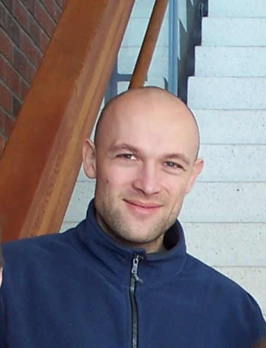

Pavel Zelenin

CONTACT
📧: pavel.v.zelenin@gmail.com
☎️: +46 72 184 77 34
🌎: Stockholm, Sweden
Education
- PhD. Physics and mathematics (specialization – biophysics). Defended at the Department of Physics, Moscow State University, Moscow, Russia.
- Full Stack Software Development, Code Institute, Dublin, Ireland.
- Full Stack, Integrify, Helsinki, Finland.
- Data Science & Machine Learning, Integrify, Helsinki, Finland.
Work history:
- Senior researcher at Department of Neuroscience, Karolinska Institutet, Stockholm, Sweden (2009 – present).
- Junior researcher at Department of Neuroscience, Karolinska Institutet, Stockholm, Sweden (2003 – 2008).
- Post-doctoral research fellow at Department of Neuroscience, Karolinska Institutet, Stockholm, Sweden (1999 – 2002).
List of publications
(59 articles, 64 abstracts devoted to systems neuroscience)
IT skills:
- Git
- HTML, CSS, Bootstrap
- JavaScript, NodeJS, Express, Jest, Jasmine, API
- Python, Flask, Django
- SQL, MongoDB
GitHub
Languages:
Russian (native), English (fluent), Belorussian (advanced), Swedish (basic).
Interests:
Natural sciences, technology, data science, machine learning, robotics, AI, neuroscience, BMI.